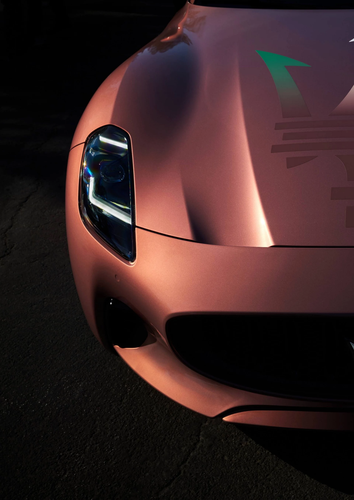

Gran Turismo
Granturismo introduction
-
Live the GranTurismo life. A
-
Journey that is both
-
physical and emotional, it
-
guides the senses into
-
uncharted territories
-
where the only roadmap
-
needed is curiosity. More
-
than a car, it is a lifestyle
TheOthers
JustTravel.
Roots
firmly planted
in the future
Introduction
Radical innovation characterizes the all-new GranTurismo, but the principle behind that evolution has remained constant since day one. Because icons aren’t born overnight.
Design
Chapter 1
An experience at the intersection of a nearly unobtainable balance of
power and luxury, of thrills and relaxation, of future and tradition,
of racetrack innovation for unprecedented road performance. In short,
it’s all here.
Let the Grand Tour begin.
An elegant expression of power
Design
The commanding presence of the Maserati GranTurismo is muscular yet aerodynamic, imposing yet refined, exuding both raging power and sophisticated beauty.
-
Grand touring at first sight
The GranTurismo can definitely be judged by its appearance: its authorative yet following contours are a prelude to the inviting interiors and power within.
-
Personality with a purpose
The Trident leads the way on the front grill making an assertive entrance. The new signature vertical full LED headlights accent it’s bold character.
-
On italian terms
The "cofango"(aportmanteau term made from the Italian words for "bonnet" and "fender") has over 3m2 of surface area giving the GranTurismo an even more sculpted look. Overall outstanding.
-
Unmistakably maserati
The tree side air vents are a true Maserati element. On the GranTurismo Folgore, they're all lit up to give a flash of the next-generation Trident energy surging within.
-
A classic twist
New taillights give the GranTurismo a distinctive appearance even at the rear: a blend of the iconic boomerang shape and a harpoon, illuminatied with full LED technology.
-
On-road exclusivity
The all-new GranTurismo is a timeless masterpiece on wheels. Free of ostentation pure and timeless it is an open invitation to explore the road less traveled. Balance is of the essence.
nero
Specifications
-
Folgore
-
Trofeo
-
Modena
-
Max power
490HP
-
Max speed
302 km/h
-
Acceleration
3.9 sec
-
Traction
AWD
-
Engine Layout
V6
-
Max Torque
600 Nm